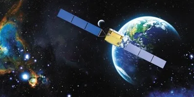

过去的几天，当全国上下都在庆祝国庆、中秋佳节时，天上那只“猴子”依旧奔跑在太阳同步轨道上，忙忙碌碌。
而500公里之下的中国科学院紫金山天文台“悟空”号科研团队，在首席科学家常进院士的带领下也没闲着，正在深入分析宇宙线和伽马射线数据。

暗物质粒子探测卫星“悟空”（图源：新华网）
从2015年12月20日接收到第一帧数传数据，至2020年9月30日，“悟空”号卫星已在轨飞行1746天，完成了全天区的第9遍扫描，共探测并处理了约86.9亿个高能粒子。
“‘悟空’号的设计寿命为3年，目前探测器及卫星平台运行状态良好，已于2019年1月正式进行首次延寿运行，为期2年。基于悟空号目前优异的工作状态，有望于2021年1月再次延寿运行。”团队负责人之一、范一中研究员告诉记者。